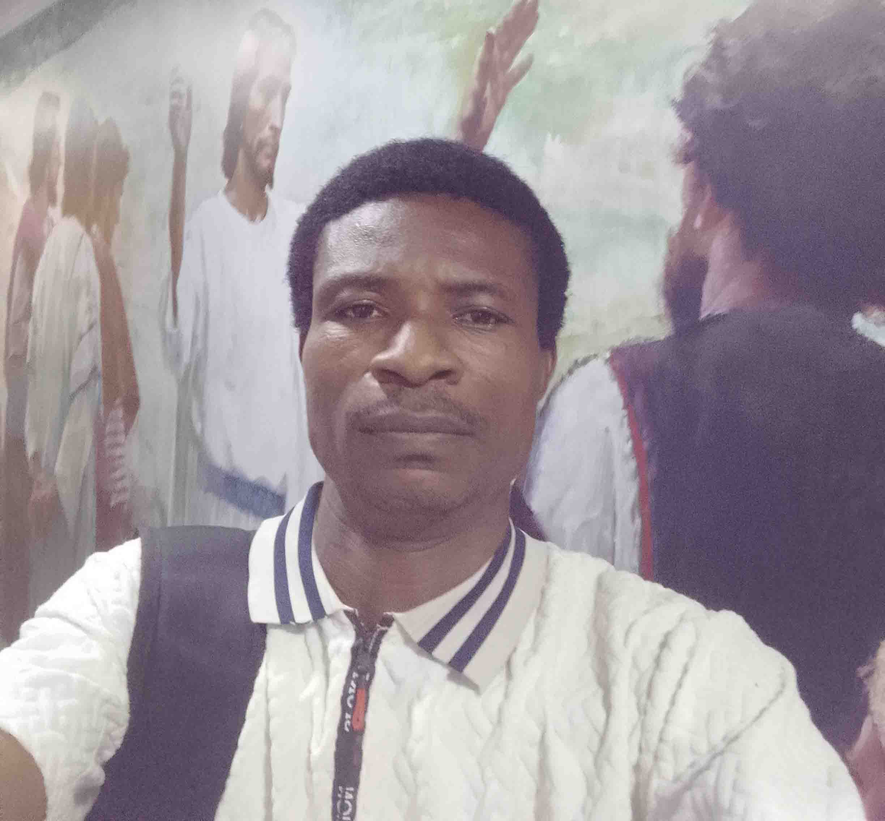

WDD 130 | Daniel Kale

My name is Daniel Kale. I live in Ikorodu, Lagos, Nigeria. I am a beginner web designer who has recently started learning how to design and build websites. I am interested in technology and enjoy improving my skills in web design and development. I am excited to continue growing my knowledge and becoming a better web designer in the future.
About the Temple
The Abidjan Ivory Coast Temple is the seventh temple built in Africa and the first for Ivory Coast (Côte d'Ivoire).
Dedicated 25 May 2025: Dedicatory Prayer
Visiting Information
- Location: Lot 118 Riviera Attoban Cocody Abidjan Cote d'Ivoire
- Hours: Check Ordinance Schedule
- Phone: +225 25 22 0 18010
- Housing: Available